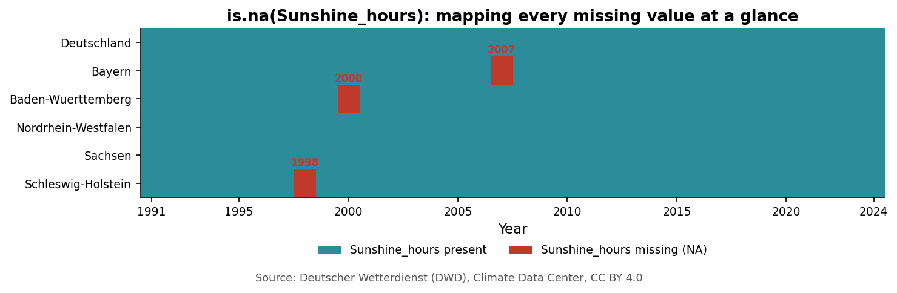

flowchart LR
A["Download<br/>dwd_climate_raw.csv"] --> B["Data<br/>Types"]
B --> C["Data quality:<br/>tidy, type, range"]
C --> D["Missing<br/>Values"]
D --> E["Data<br/>Management"]
E --> F["Clean file,<br/>ready for Ch. 2"]
style A fill:#2c8c99,color:#fff
style F fill:#d98c2b,color:#fff
1 Understanding and Managing Data
Guiding question: What data do I have and how reliable is it?
By the end of this chapter you will be able to:
- Classify any variable you meet as continuous, discrete, nominal or ordinal — and explain why that classification decides which summaries and plots are valid.
- Check a downloaded dataset against the tidy-data rules and catch a type error before it silently breaks a later calculation.
- Diagnose missing values with
is.na()— how much is missing, where and what that pattern suggests — and pick a defensible strategy for handling them. - Protect the raw data and turn every cleaning step into a permanent, re-runnable script.
(Source materials: Environmental Statistics with R, DataCamp — see Resources. Real-world data: Deutscher Wetterdienst, CC BY 4.0 — see below.)
1.1 Two Questions Before Any Graph
Every analysis in this course starts the same way, before a single plot or test: What data do I have? and How reliable is it?
These are not formalities. Data downloaded from a website has not been checked by anyone on your behalf. A column may have been mistyped, a value may be missing and a row may have been duplicated by an overlapping download. If you skip these questions, every later chapter (graphs, confidence intervals, regression) will produce confident-looking answers built on unchecked ground.
The running case
Throughout this chapter you are a student who has downloaded real climate records published by the Deutscher Wetterdienst (DWD), Germany’s national weather service — annual mean temperature, total precipitation and total sunshine duration, for five German Bundesländer and for Germany as a whole, from 1991 to 2024. The file is called dwd_climate_raw.csv and has six columns: Region, Region_Code, Year, Temperature_C, Precipitation_mm and Sunshine_hours. Of these three climate variables, annual mean temperature is the one this module follows all the way through to Chapter 4. This chapter’s cleaning exercises, though, work with whichever columns actually contain the real, disclosed formatting issues: a stray unit suffix in Precipitation_mm, three blanked values in Sunshine_hours. Inventing a fake problem in Temperature_C just to keep one column in the spotlight would break this chapter’s own promise that nothing here is invented. Once the file is clean, from Chapter 2 onward, temperature becomes the one variable you follow all the way through.
About the data in this document
Everything you see in this chapter’s numbers is real, official DWD data — nothing is invented. On top of those real values, a small number of formatting issues were deliberately added and fully disclosed (a stray unit suffix, some duplicated rows, a few blanked-out readings) so this chapter has something concrete to practice finding and fixing. Every one of these is listed exactly, with exact counts, in data/README.md — nothing here pretends a teaching device is a genuine DWD error. The file is produced by data/generate_climate_dataset.py, which contains every real value plus the source URLs it was read from, so you can regenerate it (or verify it against DWD’s own files) yourself.
1.2 Data Types
Every column in a dataset has a type and the type decides which summaries and plots are even mathematically valid. There are two families, each with two members.
Numerical variables
- Continuous. Think of time on a stopwatch. It doesn’t jump — it moves smoothly through decimals and you can always split it into smaller and smaller fractions. A continuous variable can take a wide range of numeric values where it is sensible to add, subtract, or average and it varies without fixed gaps.
Temperature_C,Precipitation_mmandSunshine_hoursare all continuous — a temperature of 9.37°C is a perfectly meaningful value. - Discrete. Now think of eggs in a carton. You count them in whole numbers; you cannot buy 2.5 eggs. A discrete variable can only take numeric values with jumps — typically non-negative counts.
Yearbehaves this way here: it only takes whole values.
Categorical variables
- Nominal. Think of a box of crayons. A green crayon isn’t “higher” or “better” than a yellow one — they are simply different, unordered categories. A nominal variable’s possible values are called levels and those levels have no natural mathematical hierarchy.
Regionis nominal:"Bayern"is not more or less than"Sachsen", they are simply different places. - Ordinal. Think of coffee cup sizes. They are distinct categories, not continuous numbers — but you universally know that a medium is larger than a small and smaller than a large. An ordinal variable is fundamentally categorical, but its levels have a natural order. None of our columns are ordinal here, but you will meet this type in your own challenge dataset (for example, an air-quality index reported as “good / moderate / poor”).
If you’re unsure whether a column is discrete or continuous, ask your learning buddy for three real-world examples of each — but check its answer against the “can you meaningfully have half of one?” test yourself, rather than taking the label on trust.
A note on units
Strictly speaking, the SI base unit for temperature is the kelvin — but climate science (and DWD’s own data) reports temperature in degrees Celsius (°C), precipitation in millimetres (mm) and sunshine duration in hours (h), because these are the practical, universally understood units for this domain and changing them would make the numbers harder to sanity-check, not easier. Every chart, table and figure in this module states its unit explicitly and consistently — get in the habit of checking the unit on every axis and every number before you trust it, here and in your own challenge dataset.
1.3 Understanding Datasets and Data Quality
As a student, you downloaded real climate data from a website. This is our base case. To move ahead and produce a trustworthy analysis, you first need to check the file against the tidy data rules and then check the values inside it.
The tidy data rules:
- Columns must be variables. Each column tracks exactly one thing (
Temperature_C,Precipitation_mm, never both mixed into one). - Rows must be observations. Each row is a single, distinct data-collection event — here, one region in one year.
- Cells must hold single values. A cell can never combine two things, such as writing
"9.4C / 60mm"in one field. Each measurement gets its own cell.
Analogy: think of an ice-cube tray. Rows are the tray’s horizontal bars, columns are its vertical lines of pockets and each individual pocket is a cell meant to hold exactly one splash of water. If whoever built the file merged pockets together or poured data across the dividers, the structure breaks and no analysis tool can “freeze” it into something usable.
library(tidyverse)
climate <- read_csv("data/raw/dwd_climate_raw.csv")
dim(climate)
glimpse(climate)Code walkthrough
dim(climate)— rows × columns.glimpse(climate)— one line per column, with its type and a few example values.
Our file already has this shape — one row per region-year combination, one column per variable — which is exactly what lets you filter(), group_by() and plot it directly once the values inside it are clean.
Checking types
After opening a downloaded file in R, the very first thing to check is whether every column has the type it claims to have.
str(climate)
class(climate$Precipitation_mm)Precipitation_mm should be numeric throughout — but str() shows it as character. Somewhere in the file, at least one value contains something other than digits and a decimal point and R is protecting you from silently losing information: a column can only have one type, so if even one cell contains non-numeric text, the entire column is read as text.
climate %>%
filter(is.na(suppressWarnings(as.numeric(Precipitation_mm)))) %>%
select(Region, Year, Precipitation_mm)This turns up 5 entries of the form "885.0mm" — a real number with a stray unit suffix typed in. parse_number() (or readr’s own numeric parsing) strips the unit and recovers the real value.
Analogy: think of an automated conveyor-belt scanner at checkout. Instead of manually weighing every item, the scanner reads each barcode and checks it against what that product should weigh. class() is the same idea applied to a column: it checks whether what came down the belt actually matches the type it was supposed to be.
Checking ranges
Once every column has the right type, check whether every value is physically plausible for what it claims to measure.
climate %>%
summarise(
temp_min = min(Temperature_C, na.rm = TRUE), temp_max = max(Temperature_C, na.rm = TRUE),
precip_min = min(as.numeric(gsub("mm", "", Precipitation_mm)), na.rm = TRUE),
sun_min = min(Sunshine_hours, na.rm = TRUE), sun_max = max(Sunshine_hours, na.rm = TRUE)
)Annual mean temperatures across these five regions fall between about 6.7°C and 11.5°C — entirely plausible for Germany. Precipitation and sunshine values are likewise within the range you’d expect for a temperate European climate. This check passes. That is not a wasted step: you only know that because you looked, not because nothing seemed obviously wrong. Continuing the conveyor-belt picture: range checks are the belt’s alarm light. If a box came through weighing 500kg instead of 5kg, the light would trip — here, it stays off.
One more thing worth checking: duplicates
climate %>% count(Region, Year) %>% filter(n > 1)This turns up 4 region-year combinations appearing twice — for example, Baden-Württemberg, 1994. This isn’t a measurement error; it’s what happens when two overlapping export files get concatenated without checking. distinct() removes the repeats.
A real detail worth knowing: where the numbers actually came from
DWD’s full historical files (1881–present) list columns like Niedersachsen and Niedersachsen/Hamburg/Bremen side by side, because Hamburg and Bremen were reported jointly with Niedersachsen in earlier decades before being split out. That’s not a quality problem to fix — it’s exactly the kind of thing you can only know by reading a provider’s own documentation, not by guessing from a column name. The five regions used in this chapter were chosen specifically because each was reported as one stable region for the entire 1991–2024 period. Source: DWD Climate Data Center, CC BY 4.0, retrieved 24 September 2026.
1.4 Missing Values
Even a mostly-clean file can have gaps. R treats missing data as a strict structural state: it forces missing observations into a vector as NA (“Not Available”) and if a column contains even one NA, running a basic math function like mean() on it automatically returns NA too. This is a safety feature — it stops you from silently ignoring a gap — not a bug.
climate %>%
summarise(across(everything(), ~ sum(is.na(.))))Sunshine_hours has 3 missing values out of 208 raw rows — scattered across different regions and years, with no single region or year responsible for all of them. Rather than visually hunting for blank cells, is.na() lets you map every missing entry across the whole file at once:

Analogy: think of a broken link in a bicycle chain. If one link is missing, trying to pedal moves nothing — the chain simply won’t turn. That’s NA doing its job: an intentional stop sign, not something to route around silently. Appending na.rm = TRUE to a function is like removing the broken link and snapping the remaining good pieces back together so you can move forward again — deliberately, not by accident.
But how you go around a gap depends on what you’re trying to calculate. Three strategies, in order of how much they assume:
Strategy A — Column-specific omission. When analysing temperature trends, use the whole row as normal. When analysing sunshine specifically, tell R to skip just the missing entries with na.rm = TRUE (e.g. mean(climate$Sunshine_hours, na.rm = TRUE)). Every other column in that row stays fully usable.
Strategy B — Linear interpolation. Because this file is recorded once per year, you can estimate a single missing year’s value as the average of the year before and the year after, for that same region. Schleswig-Holstein’s missing 1998 sunshine value, for instance, could reasonably be estimated from its 1997 and 1999 values. This only makes sense when the gap is a single isolated point in an otherwise regular series — not when several consecutive years are missing.
Strategy C — Complete-case analysis (listwise deletion). If your goal is specifically a multi-variable calculation that needs all three climate variables at the exact same region-year — for example, the regression in Chapter 4 — remove that row entirely with na.omit() or drop_na(). You lose the row’s other variables too, but you avoid quietly mixing real and estimated values into one model.
Exercise 1.1 — Decide, don’t just delete
Q1. With only 3 missing values, scattered rather than concentrated, which strategy (A, B or C) would you choose for a 34-year trend line of Sunshine_hours alone? Which would you choose if you were about to fit the multiple regression from Chapter 4, which uses Sunshine_hours, Year and Region together? Justify the difference.
Q2. Now imagine instead that all 3 missing values belonged to the same region in the same decade. Would your answer change? Why?
1.5 Data Management
Web data can change, update, or disappear from a site tomorrow. Two habits protect every analysis you build on top of today’s download:
- Never overwrite the raw file. Save
dwd_climate_raw.csvinto a dedicated, locked-down folder and never modify it by hand — not even to fix the one thing you already know is wrong. Every cleaning step (stripping the"mm"suffix,distinct()-ing the duplicates, deciding how to handle the 3 missing values) happens in code that reads the raw file and writes a separate clean one. - Make cleaning reproducible. Typing a fix directly into the R console vanishes the moment you close the session. Write every adjustment into a permanent, re-runnable script file, so that any researcher — including you, in six months — can click “Run” and recreate exactly the same clean dataset from a fresh copy of the raw download.
If you ask your learning buddy to “clean my data,” ask it to show you the code rather than hand you an already-cleaned file — you want to be able to re-run the same steps yourself on a future download and to catch it if it silently drops a row you didn’t ask it to.
If class(), str() and the idea of a column “type” still feel unfamiliar: swirl’s “R Programming” module runs short, interactive exercises on exactly this, directly in your own R console.
If the tidy-data rules clicked and you want the full reasoning behind them, straight from the source: Hadley Wickham’s “Tidy Data” (Journal of Statistical Software, 2014) is the short, readable paper that defined the rules you just used.
Deutscher Wetterdienst — Climate Data Center · DWD Terms of use (CC BY 4.0) · Hands-On Programming with R · R for Data Science. Full list with descriptions: Resources.
1.6 Chapter Summary
You now have a repeatable process: classify every variable by type, check a downloaded file against the tidy-data rules, check that every column’s type and range are what they claim to be, map and diagnose missing values with is.na() and protect the raw download behind a reproducible script — so that everything you build in Chapters 2–4 rests on ground you’ve actually checked, not just glanced at.
1.7 Common Mistakes
| Mistake | Why it matters | Fix |
|---|---|---|
| Assuming a column is numeric because it “looks like numbers” | One stray text value (a unit suffix, a typo) forces the whole column to character |
Always run class() / str() before summarising |
Deleting every row with any NA by default |
Throws away real, usable data in every other column of that row | Match the strategy (A/B/C) to what you’re actually calculating |
| Editing the raw CSV by hand | Not reproducible — the next download won’t get the same fix | Clean via a script that reads raw and writes clean |
| Treating “nothing looked wrong” as “I didn’t need to check” | A passing check is still a checked, reportable fact | Run the type and range checks every time, even when the data looks fine |
1.8 Check Your Understanding
- Could you explain, to someone who has never seen this dataset, the difference between a discrete and a continuous variable using two of its actual columns?
- Why does one stray unit suffix like
"885.0mm"force an entire numeric column to be read as text? - Given 3 scattered missing values, could you explain when Strategy A, B or C is the right choice — and when it isn’t?
1.9 Practice Exercises
A short set of standalone revision questions, each with a model answer to check yourself against.
1. Classify. For each of the following, state the variable type: Region, Year, Temperature_C, a hypothetical “heatwave severity: mild/moderate/severe” column.
Answer
Region — categorical (nominal). Year — discrete numeric. Temperature_C — continuous numeric. The hypothetical severity column — categorical (ordinal): it has a natural order, unlike Region.
2. Find the type error. Look at "885.0mm". Why does even one value like this force the whole Precipitation_mm column to be read as character instead of numeric?
Answer
A column can only have one type in R. If even one cell contains non-numeric characters, R (orread_csv()) reads the entire column as text/character to avoid silently discarding the one bad cell.
3. Coverage arithmetic. Five regions, 34 years each, plus one national series of 34 years and 4 duplicated rows in the raw download. How many rows should the clean file have after removing the duplicates? Show your work.
Answer
\(5 \times 34 = 170\) region-year rows, plus \(34\) national rows, for \(170 + 34 = 204\) total afterdistinct() removes the 4 duplicates from the 208-row raw file.
4. Duplicates vs. legitimate repeats. Region == "Bayern" naturally appears 34 times (once per year) in a tidy file. How is that different from the kind of duplicate you found in the “Understanding Datasets and Data Quality” section above?
Answer
34 rows for Bayern across 34 different years are 34 distinct observations — that’s expected. A true duplicate is the same Region-Year combination appearing more than once, which should be a single observation.5. Strategy choice. You need the exact multi-variable correlation between Temperature_C, Precipitation_mm and Sunshine_hours at the same region-year. One of those three values is missing for one row. Which strategy (A, B or C) fits and why would the other two be a worse fit here specifically?
Answer
Strategy C (complete-case analysis /na.omit()): a joint multi-variable calculation needs all three real values at the same row, so estimating the missing one (B) would mix real and invented data into the correlation and column-specific omission (A) doesn’t apply once you need all three columns together.
6. License and attribution. What does “CC BY 4.0” require you to do if you publish a chart built from this data?
Answer
Attribute the source — e.g. “Source: Deutscher Wetterdienst (DWD), Climate Data Center, CC BY 4.0” — but you are otherwise free to use, adapt and republish it, including commercially.7. NA propagation. Suppose Sunshine_hours for one region’s 34 years is stored as a plain vector and you run sum(Sunshine_hours). One value in that vector is NA. What does sum() return and why? How would you correct the call so it returns the total of the non-missing values instead?
Answer
sum() returns NA: R treats “unknown plus anything” as itself unknown, so a single missing value poisons the whole sum rather than being silently skipped. Fix it with sum(Sunshine_hours, na.rm = TRUE), which tells R explicitly to remove the NA values before summing — the same na.rm = TRUE pattern from Strategy A earlier in this chapter.
Continue to Chapter 2, Exploring and Visualising Data.